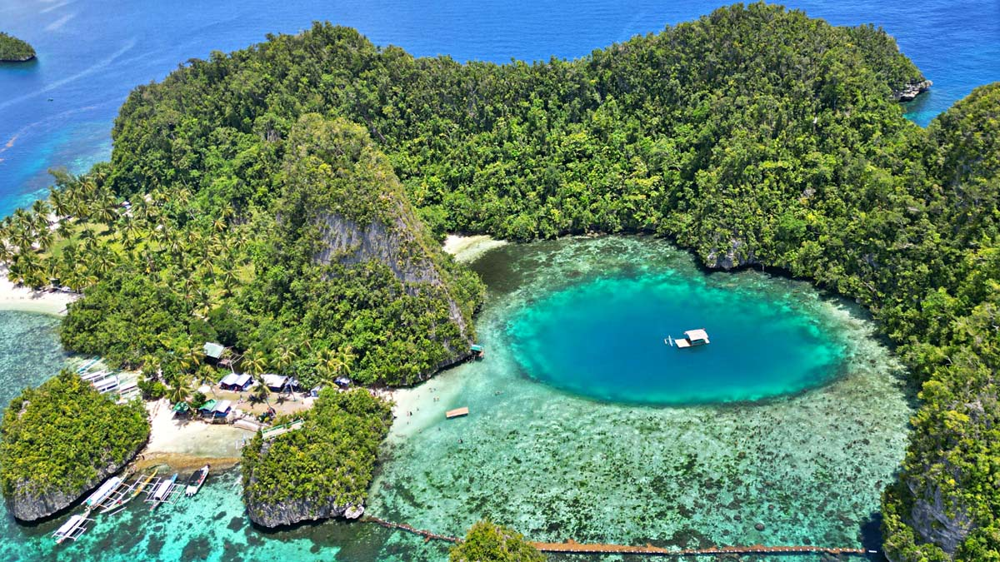
Dinagat Islands
Discover the hidden paradise of Surigao del Norte with pristine beaches, mystical caves, and breathtaking landscapes
Explore the Wonders


Bitaog Beach
Hidden on the southern part of Lalaking Bukid, a major island in the province, is a lovely pocket beach called Bitaog Beach which is one of the famous tourist spots in Dinagat Islands. It features a powdery white sand beach decorated with coconut trees and being bordered on both ends by impressive and towering limestone cliffs. This beach is also known for its turquoise waters which is very alluring for swimming. Bitaog Beach is located in Basilisa, Dinagat Islands.


Bababu Beach
A white-sand cove in Basilisa, Dinagat Islands, Philippines, best known as the gateway to the mystical Lake Bababu. It features turquoise waters, limestone cliffs, and serves as the starting point for a trek to the lake, which is partly seawater and partly freshwater due to an underwater tunnel connection.


Pagkawasan Beach
Pagkawasan Beach in Dinagat Islands is a serene tropical getaway known for its crystal-clear turquoise waters, powdery white sand, and tranquil atmosphere.
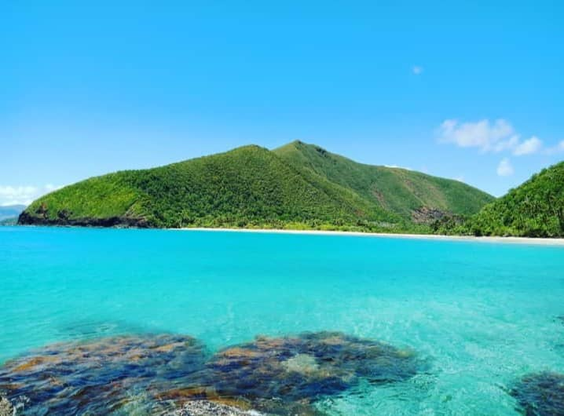


Hinabyan Beach
A pristine, secluded white-sand beach located in Barangay Del Pilar, Cagdianao, Dinagat Islands, Philippines. It is known for its crystal-clear waters, untouched natural beauty, and tranquil atmosphere, making it ideal for those seeking a quiet escape.


Isla Aga
Isla Aga is a small, picturesque island located in Basilisa, Dinagat Islands, Philippines. It’s one of the hidden gems of the province, often included in island-hopping tours because of its natural beauty and tranquil atmosphere.
Pangabangan Island
Pangabangan Island is often called the “Maldives of Dinagat” because of its sandbar and lagoon scenery. It’s a favorite among travelers who want both adventure and relaxation in one spot.


Kisses Islets
Kisses Islets are a cluster of small, cone-shaped limestone karst formations off the coast of Basilisa, Dinagat Islands, Philippines, often compared to the famous Chocolate Hills of Bohol but rising directly from the sea. They are a popular stop on island-hopping tours, offering dramatic scenery and crystal-clear waters.


Sayaw Islet
Cluster of lush islets surrounded by turquoise waters. Rock formations and caves nearby, sometimes called the “Sayaw twin caves.” Golden sand beaches ideal for swimming and relaxing. Photogenic views—popular for drone shots and panoramic photography.


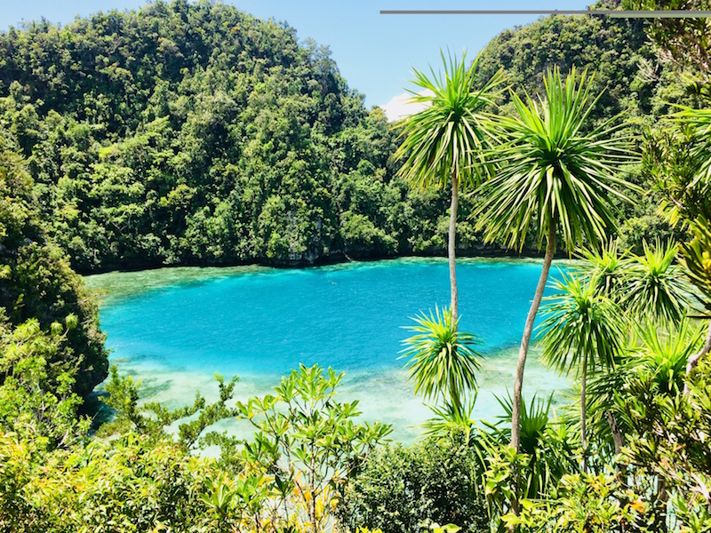

Blue Lagoon
Sometimes called the “Maldives of Dinagat” because of its lagoon and sandbar scenery. Offers both adventure and relaxation, making it a highlight of Dinagat island-hopping trips. Its natural tidal pool is unique in the region, drawing comparisons to lagoons in Palawan and other famous Philippine destinations.
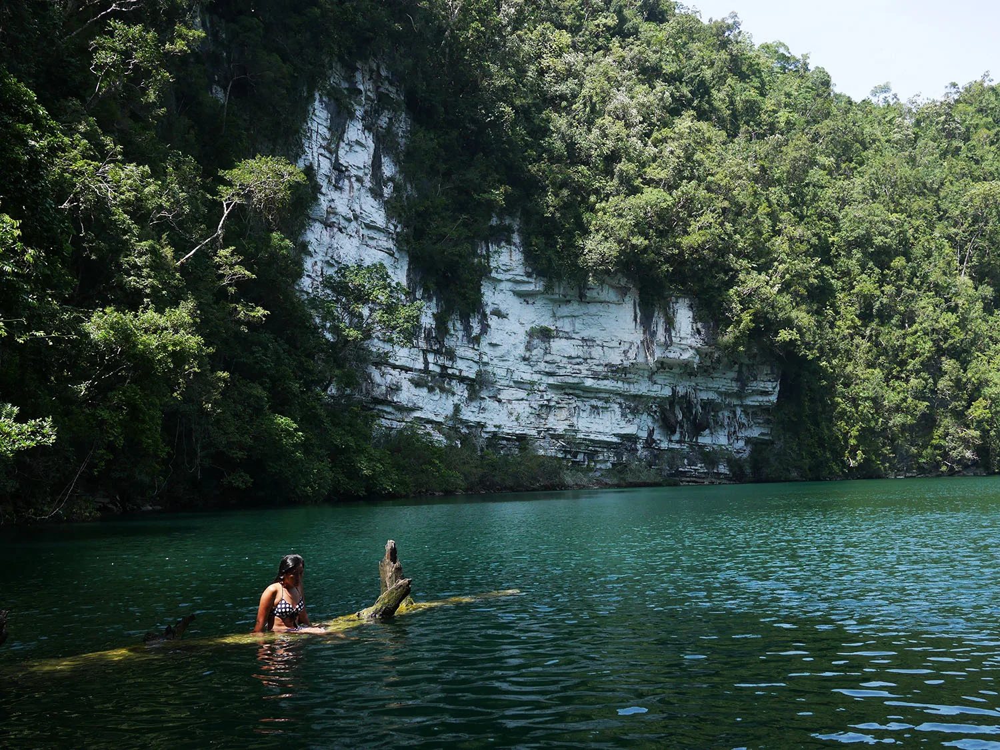


Lake Bababu
Lake Bababu is a mystical inland lake located in Basilisa, Dinagat Islands, Philippines, just behind Bababu Beach. It’s one of the province’s most fascinating natural wonders because of its unusual water composition and cultural significance. Locals believe the lake has healing powers and is inhabited by spirits. It’s considered a sacred site, adding to its allure beyond just natural beauty.

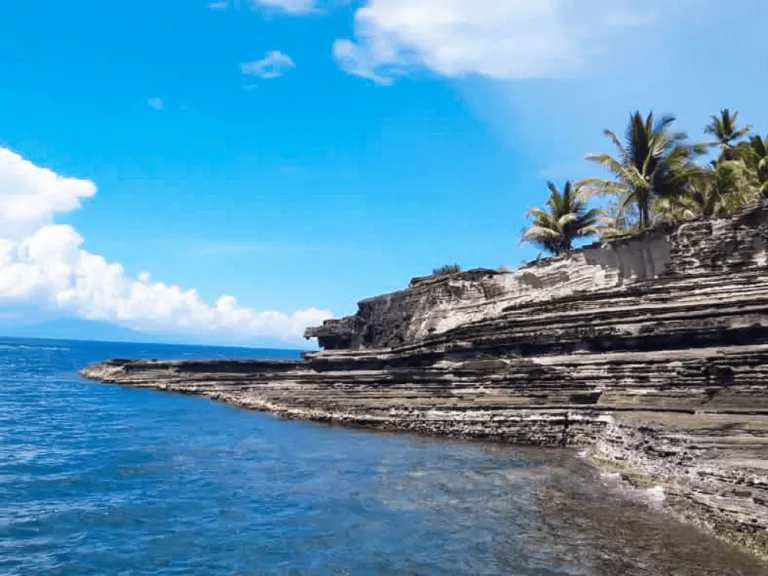
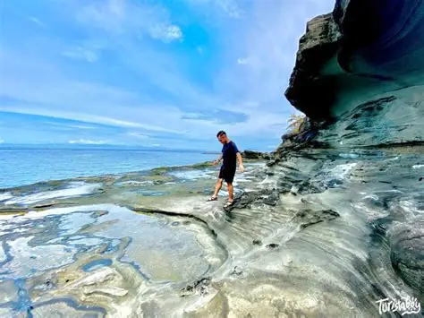
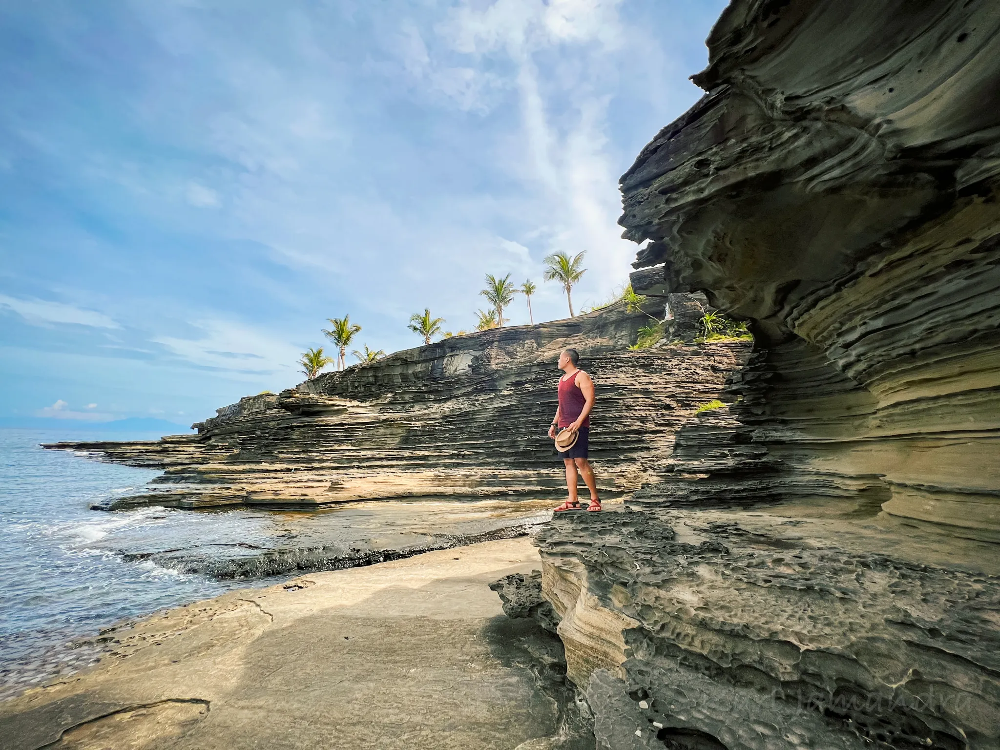
Hagakhak Rock Formation
Hagakhak Rock Formation is a striking natural landmark in the Dinagat Islands, Philippines, particularly around Libjo and Basilisa. It consists of dramatic bleached limestone and sedimentary rock formations along the coast, shaped by centuries of wind and sea erosion.
Bonsai Forest (Mount Redondo area)
The Mount Redondo Natural Bonsai Forest is a unique and expansive area in the Dinagat Islands, Philippines, known for its miniature trees and stunning natural beauty. The forest covers over 100 hectares and features a variety of trees, including the bonsai magkuno tree (iron wood), lauan, pitcher plants, and pine trees.
.webp)
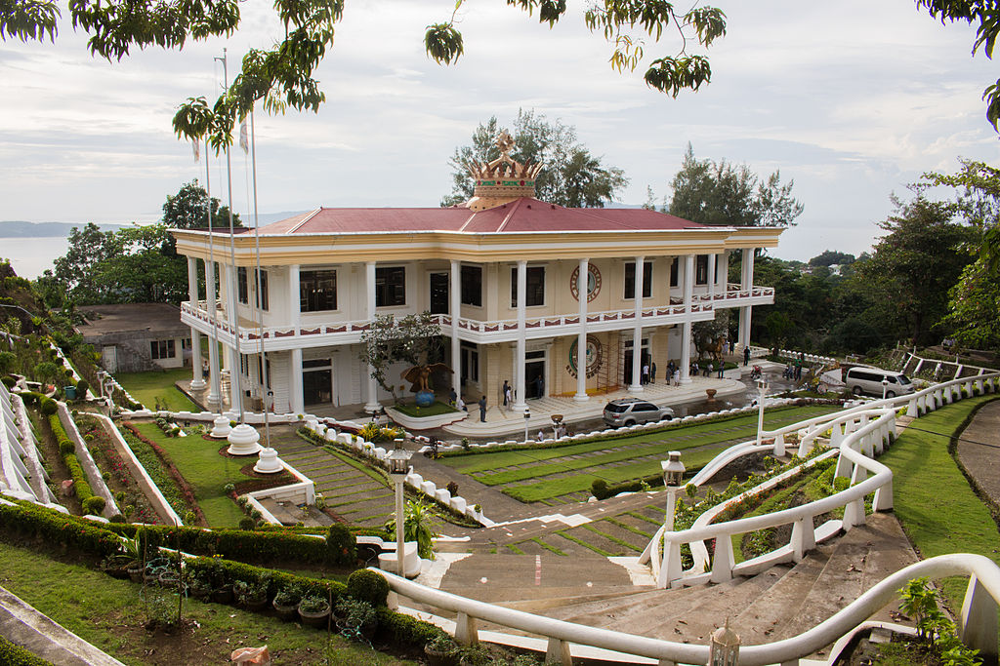
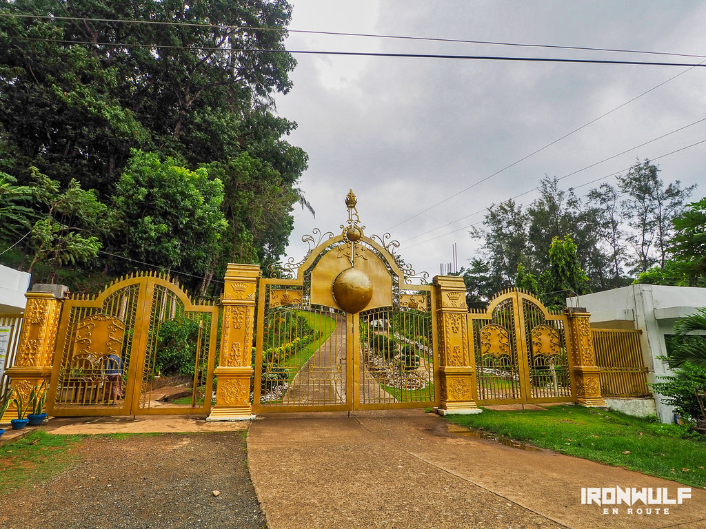
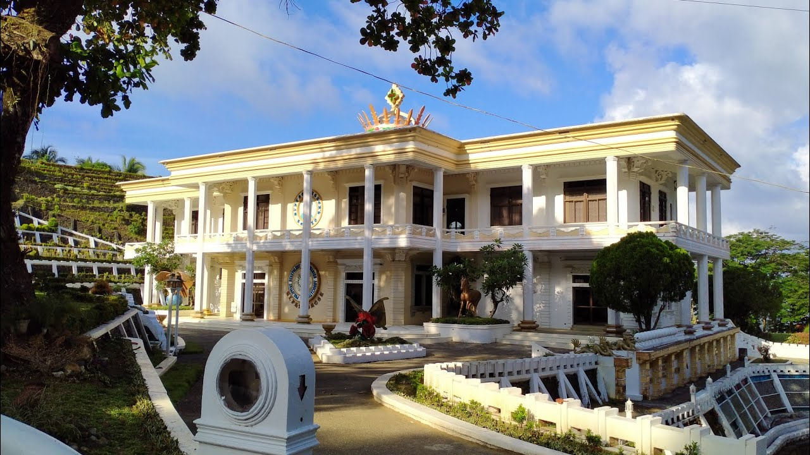
PBMA Shrine (Philippine Benevolent Missionaries Association Shrine)
The PBMA Shrine (Philippine Benevolent Missionaries Association Shrine) is a major cultural and religious landmark in San Jose, Dinagat Islands, Philippines. It serves as the spiritual center of the Philippine Benevolent Missionaries Association (PBMA), a fraternal and humanitarian organization founded in 1965 by Ruben Edera Ecleo Sr., known to members as the “Divine Master.”


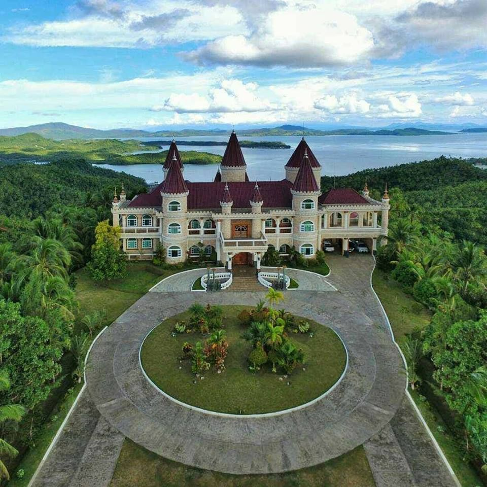
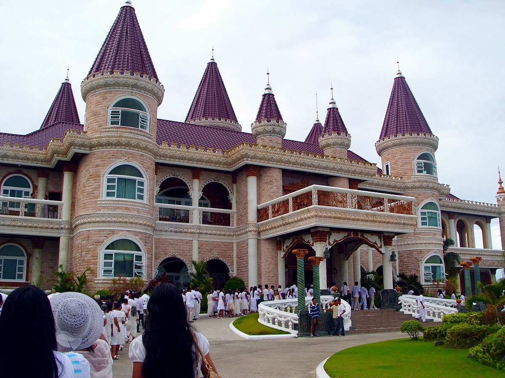
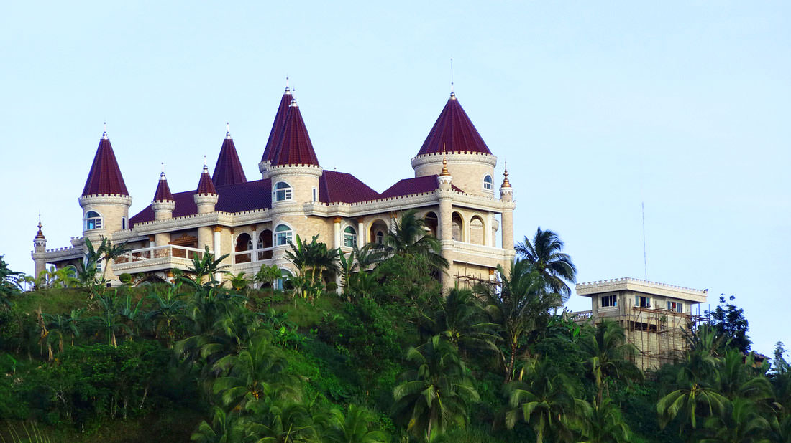
Islander’s Castle
Islander’s Castle is a grand mansion located in San Jose, Dinagat Islands, Philippines, built by the late Governor Glenda Ecleo, a member of the influential Ecleo family. It is one of the most recognizable landmarks in the province because of its size, design, and symbolic presence.
.webp)
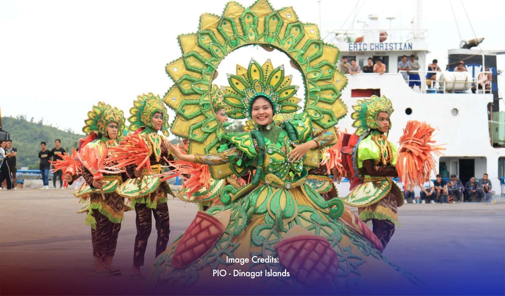
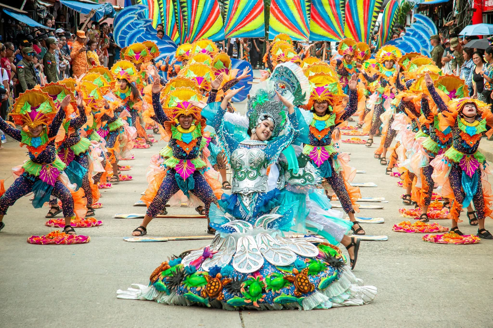
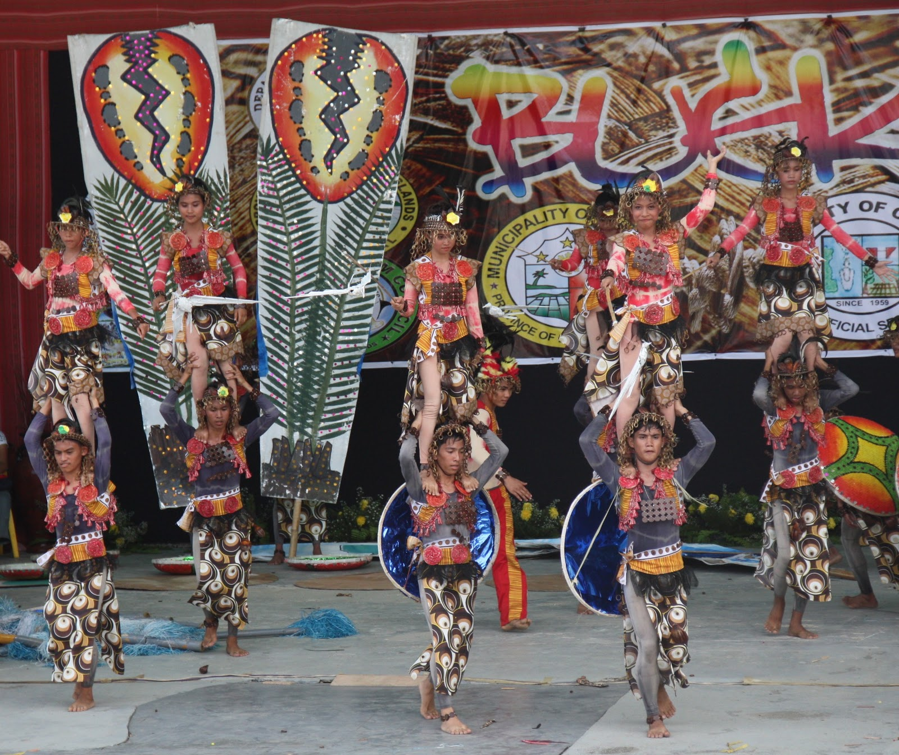
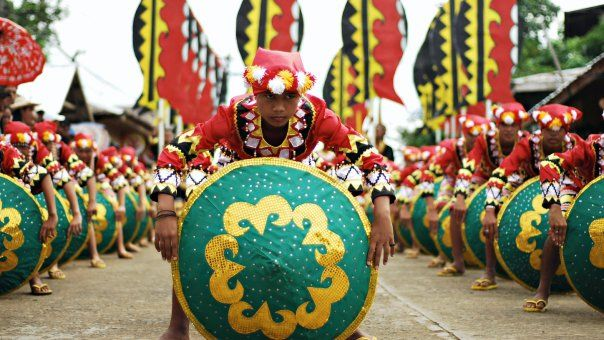
Local Festivals (e.g., Dinagat festivities)
Dinagat Islands is often called the “Mystical Province of Love”, and its festivals reflect this identity. These events combine religious devotion, cultural pride, and tourism promotion, drawing visitors from across Caraga and beyond. The festivals are also tied to the PBMA (Philippine Benevolent Missionaries Association) influence, blending spirituality with local traditions.

San Jose Public Markets
San Jose Public Market in Dinagat Islands is the main commercial hub of San Jose town, serving as the center for trade, daily shopping, and community interaction.

Fresh seafood dishes
In the Dinagat Islands, fresh seafood dishes are a highlight of local cuisine, reflecting the province’s coastal abundance and fishing traditions.

Grilled fish by the beach
Grilled fish by the beach is a classic coastal dining experience where freshly caught fish is cooked over open flames or charcoal right by the shoreline. It’s both a culinary tradition and a cultural moment in many seaside communities, including the Philippines.

Kinilaw (local ceviche)
Kinilaw is often served as an appetizer or pulutan (food paired with drinks). In Dinagat, it’s a signature dish during island-hopping trips, made fresh right on the beach. Considered a heritage food, with roots tracing back centuries before Spanish colonization.
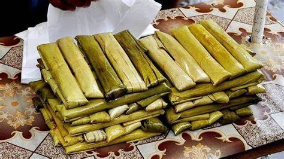
Suman or local desserts/snacks at San Jose markets
Suman is a beloved Filipino snack made of glutinous rice cooked in coconut milk, then wrapped in banana or palm leaves and steamed. It’s one of the most common local desserts you’ll find at the San Jose Public Market in Dinagat Islands, often sold alongside other native delicacies.
Suggested Dinagat Islands Itineraries
Choose your perfect trip! Each itinerary is budget-friendly and easy to follow.
1-Day Trip
- Morning – Lake Bababu (relax, nature walk)
- Late Morning – Hagakhak Rock Formation (scenic cliffs)
- Afternoon – Pagkawasan Beach (swimming, sunset)
- Evening – San Jose Town, local seafood
3-Day Escape
- Day 1 – Pangabangan Blue Lagoon, Lake Bababu, Hagakhak Rock Formation
- Day 2 – Isla Aga, Kisses Islet, Sayaw Islet (island hopping)
- Day 3 – Pagkawasan Beach, San Jose Market (local food)
1-Week Adventure
- Day 1 – Pangabangan Blue Lagoon, Lake Bababu
- Day 2 – Hagakhak Rock Formation, Pagkawasan Beach
- Day 3 – Isla Aga, Kisses Islet, Sayaw Islet
- Day 4 – Explore more islands or relax at beaches
- Day 5 – Islander’s Castle, PBMA Shrine
- Day 6 – San Jose Town, try local food
- Day 7 – Free day: revisit favorite spots